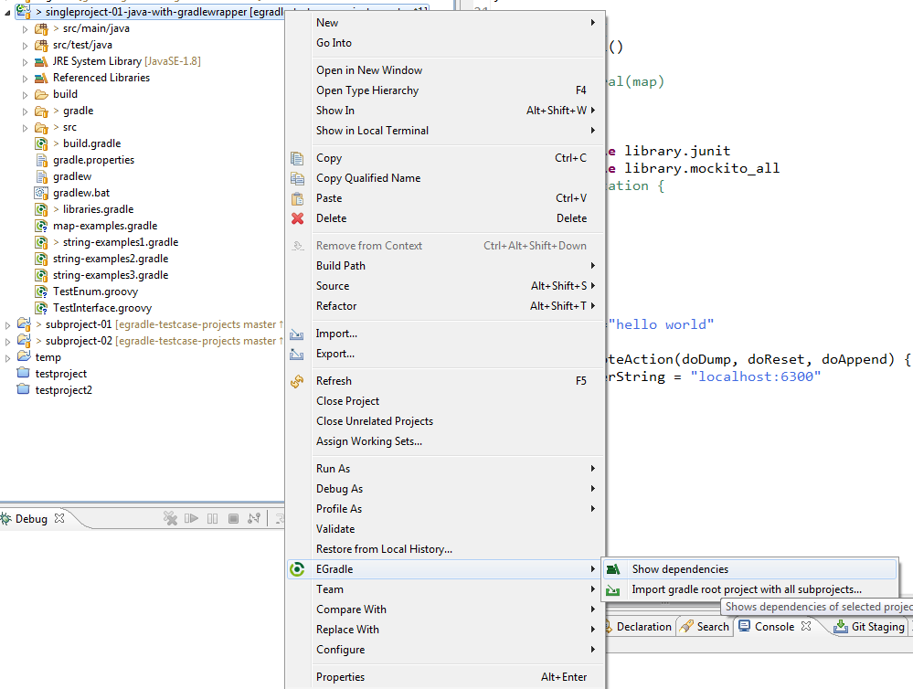
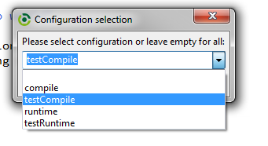
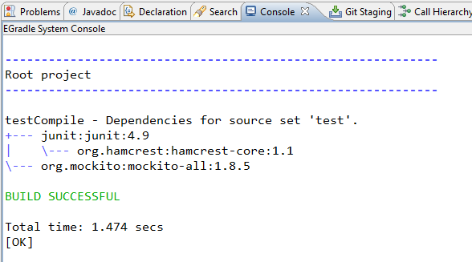

User guide
User guide
When you want to know which dependencies a project has (with all inherited dependencies) simply select a gradle root or subproject in Navigator or Package explorer and do following context action:
After executing "show dependencies" you will get a dialog appearing on your screen:
You can choose one of the predefined default entries or type a custom one. When you have already opened this dialog before the former selected configuration will reappear at combobox as default. Also your last dialog location will be persisted and reused.
This will